AIと一緒に生産治具を設計して、3Dプリンタで作るまで ——香水瓶60本にロットシールを貼る道具ができた話
業務改善コラム ／ 現場DX・ものづくり ／ 読了目安：約10分
弊社の香水小分けブランドでは、1.5mlの小瓶にロット番号のシールを貼っています。直径9mmの丸いシールを、直径11mmほどの瓶の底に、1本ずつ。地味ですが、数が増えるとじわじわ効いてくる作業です。
この作業を専用の道具（治具）でラクにしよう、という話が社内から上がり、2日でAIと一緒に設計して3Dプリンタで初版を刷り、そこから1週間かけて今の形になりました。要件を言葉にするところから、形を作るプログラム、印刷の設定まで、ほぼ全部AIとの対話で進んでいます。うまくいったことも、作ってから捨てたものも、そのまま書きます。
きっかけは従業員の提案だった
この改善の草案は、私ではなく従業員からの提案でした。現場で毎回シールを貼っている人が「道具があればもっと速いのでは」と言ってくれた。私はそれを形にする役です。工程改善で一番うれしいのは、仕組みができた瞬間より、現場の人が「ここが面倒」と声に出してくれた瞬間だと思っています。
「治具（じぐ）」とは、作業を速く・正確に・誰がやっても同じにするための、その作業専用の道具のこと。製造業では、製品そのものより治具の出来が品質を決めると言われるくらい大事なものです。
そして今回は、ゼロからの発明ではありません。出発点は、もともと使っていた既製品の治具でした。
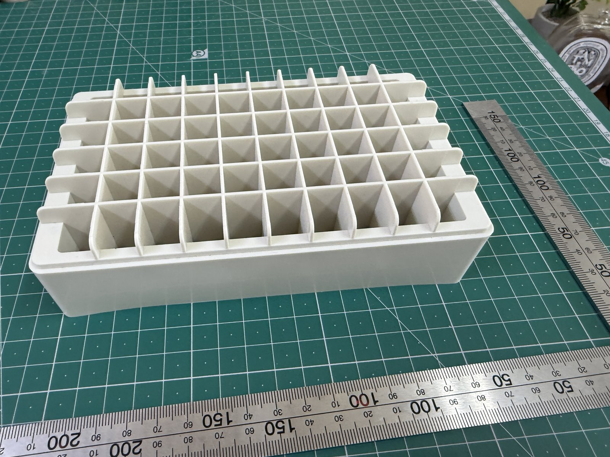
何を作ったか——貼る→ひっくり返す→詰める
使っているシールは市販のラベル用紙（はがきサイズに丸9mmが60面、6列×10段）。瓶は60本単位で扱うので、60本まとめて貼って、そのまま充填とスプレー取り付けまで流せることをゴールにしました。できたのは4種類の部品です。
- 治具1「シール貼り台」：瓶を逆さまに60本挿す台。瓶の底が5mmだけ頭を出すので、そこにシールを貼る。シール用紙を切った短冊を突き当てる壁（フェンス）付き
- 治具2「モジュール」：瓶6本を1列で受ける細長い部品を10本。隣同士を上から落とし込んで連結し、60本分の受け台になる。底が5mmの板になっていて、スプレーを押し込む力を床で受ける
- 端板（左右）：モジュールを挟む両端の板。位置決めのピンが付いていて、治具2を治具1に被せるときのズレを防ぐ
- 治具3「台座トレー」：ひっくり返すときに治具1とカチッと噛み合ってロックする受け皿。反転中に手で挟み続けなくていい。反転後はそのまま充填の台座になる。長い側の壁は抜き差しできる別部品。※トレーは使ってみてから追加した部品です（後述）
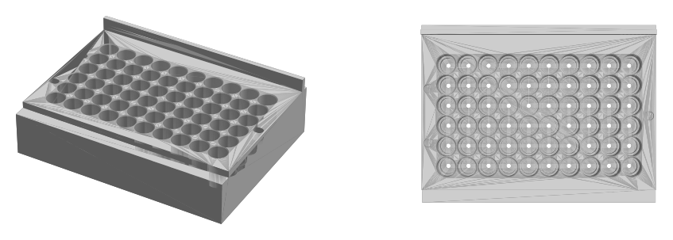
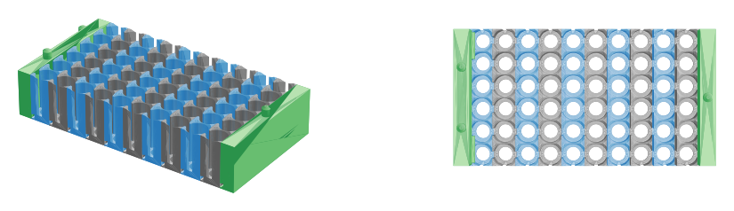
工程はこうなります。
- 治具1に瓶を逆さまに挿す（底が5mm頭を出す）
- シール用紙を6枚ずつの短冊に切り、フェンスに突き当てて載せ、手で6枚貼る
- モジュールを1本ずつ治具1に被せていき、端板を付ける（瓶と隣のモジュールで位置が自動的に決まる）
- 台座トレーを被せて爪をカチッと掛け、全体をひっくり返す
- 治具1を持ち上げて外す。瓶はモジュールに正立した状態で、トレーに収まっている
- トレーに入れたまま香水を充填し、スプレーを手で押し込む
- トレーの側壁バー2本を真上に抜いて、長い側の壁を消す
- モジュールを端の列から1本ずつ真上に抜き、6本単位で運ぶ・保管する
AIとどう進めたか——言葉で要件、プログラムで形、印刷設定まで
使ったのは「Claude Code（クロード・コード）」という、文章で指示を出すとプログラムを書いてくれるAIの道具です。流れはこうでした。
- 要件を言葉で整理する：瓶の寸法、シールの配置、「瓶に手を触れずに反転したい」「支え材なしで印刷したい」といった条件を、会話しながら書き出す
- 形をプログラムで作る：AIがPython（パイソン）で、寸法を入れると立体が出てくるプログラムを書く。出力は3Dプリンタに渡す「STL」という形式。専用の設計ソフトは一切使っていません
- 画像で確認する：形を斜め・真上から描いた画像も同時に出してもらい、見て「ここをこう変えて」と返す
- 印刷の設定まで書いてもらう：3Dプリンタ（Bambu Lab P2S）の設定ファイルもAIが作成。材料、積層0.20mm、壁3周、支え材なしが最初から入っている
- 印刷して、現物で判断する
立体を薄い層に切り分ける「スライサー」というソフトの設定まで含めて、会話の中で一式そろったのが、自分でも少し驚いたところです。
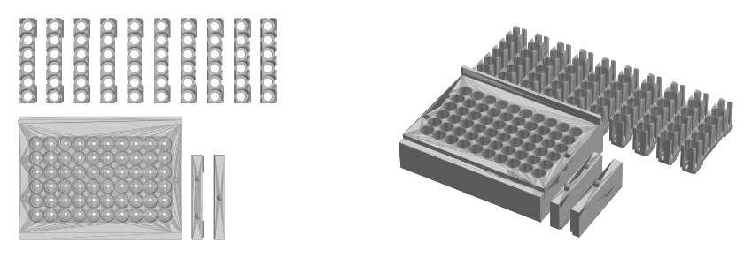
設計の見せ場4つ
振り返って「これは効いた」と思う判断が4つあります。どれも、AIと会話している途中で出てきたものです。
① シールの並びの間隔を、そのまま穴の間隔にした
ラベル用紙のシールは、約12.7mm（ちょうど1/2インチ）の間隔で並んでいます。治具1の穴の間隔も、この12.7mmにそろえました。すると用紙を6枚ずつの短冊に切って治具に置くだけで、シールの中心が瓶の底の中心に自動で来ます。「どこに貼るか」を考える作業そのものを、設計で消した形です。瓶の底は直径11.2〜11.5mm、シールの実寸は8.7mmなので、細いほうの瓶で計算しても、ずれの許容は片側1.25mm。誤差を積み上げても0.9mm程度に収まる計算でした。
② 挟んでひっくり返す（サンドイッチ反転）
シールは瓶の底に貼るので、貼るときは逆さま。でも充填するときは正立でないといけない。60本を1本ずつ持ち替えていたら治具の意味がありません。そこで治具1の上に治具2を被せ、挟んだまま全体をひっくり返すことにしました。治具1を持ち上げれば、瓶は正立で乗り移っている。瓶には一度も手を触れません。
面白いのは、反転中は瓶そのものが上下の治具をつないでいること。だから連結は「並びがそろう」程度の精度で足りました。
③ 0.25mmの壁問題を「開口」で解いた
穴の間隔は12.7mm、瓶を受ける穴の直径は12.2mm。隣り合う穴の間に残る肉は0.5mmしかありません。しかもこの治具は6本ずつの部品に分けるので、境界では1つの部品につき0.25mm。3Dプリンタでは印刷できない薄さです。
壁を厚くするには間隔を広げるしかないのですが、それだと①で消した「貼る位置を考える作業」が復活してしまう。悩んだ末に気づいたのは、瓶同士は太いほうの11.5mmでも1.2mm離れていて、そもそもぶつからないということ。ならば穴の側面を4mm開口して、壁自体を無くせばいい。瓶は4mmの隙間からは抜けないので、受け台としては何も変わりません。
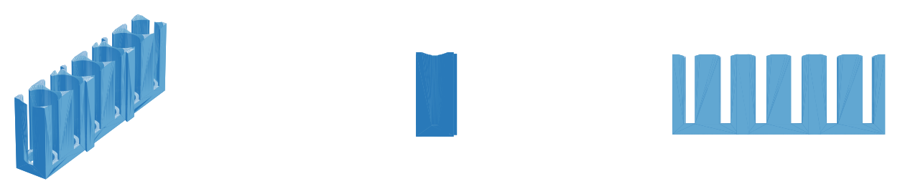
④ 支え材がいらない形にした
3Dプリンタは下から積み上げるので、宙に浮いた「下向きの面」があると、その下に「サポート」という支え材を自動で生やします。剥がす手間がかかるうえ、細かい溝の中に生えると取れません。そこで全部品から浮いた下向き面をなくすことを条件にしました。
最終形は、連結部を「上から見て台形の、まっすぐ縦に伸びる溝」にして、隣のモジュールを上から落とし込んで差す方式。斜面も天井もないので、浮く面がそもそも存在しません。ここに辿り着くまでに一度失敗しているのですが、それは次章で。
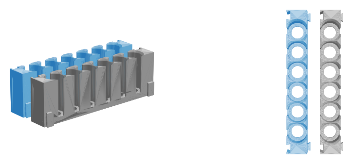
試作して、判断を変えたもの
きれいな話だけ書くとうそになるので、途中で捨てたものも書きます。
押さえフォークを作って、捨てた
最初の版では、短冊を瓶の底に押し付ける「フォーク」まで設計していました。歯が6本、シールの重心を押すよう2mmずらし、押し込みすぎない高さ止め付き。我ながらよくできていたと思います。1列分を印刷して試した感触も「めっちゃいい感じ」でした。
ただ、実際にやってみるとフォークで押すより指で貼るほうが早かった。それだけの理由で廃止です。時間をかけた設計ほど手放しにくいのですが、現場で速いほうが正解です。
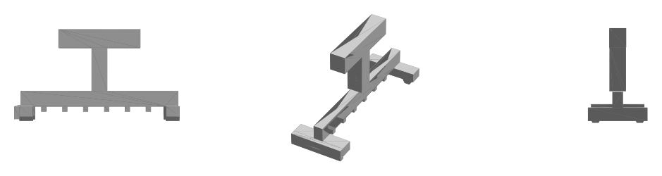
材料は、しなやかなPETGより硬いPLAが良かった
テストピースはPLAとPETGという2種類の樹脂で刷ってみました。治具は「たわまない」ほうが扱いやすく、硬さのあるPLAのほうが向いていました。
脚付きをやめて、底板で力を受ける
治具2は最初、脚付きの浅い設計でした。でもスプレーを瓶に押し込む工程では、上からかなりの力がかかります。脚で受けるより、5mmの底板で床に直接逃がすほうが素直だと判断し、脚なし・深さ33mm（瓶の高さとほぼ同じ）に変更しました。
蝶ネクタイ型のつなぎ部品は「面倒すぎる」で却下
連結方法として、蝶ネクタイ型の小部品を別に作って差し込む案も出ました。3サイズ刷って合うものを使う、という案です。ただ部品が増える・なくす・選ぶ、と面倒が積み上がるので却下。代わりにモジュールの底へ直接「あり溝」を彫り、部品を増やさずスライドでつなぐ形に。……このときは、これで決着したつもりでした。
溝の中に支え材が生えていた——最初の対策は「45度」
本番一式をスライサーにかけた画面を見たら、連結の溝の中に木の枝のような支え材が生えていました。そこで連結部の断面を「底は平ら、上面だけ45度」に変え、印刷設定でも支え材をオフにして、試作なしで本番一式を1枚のプレートに並べて印刷しました。3Dプリンタは45度までの斜面なら支えなしで印刷できる、という定石に沿った形です。
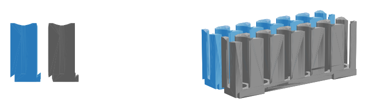
その45度も、刷ってみたら失敗だった——横に差すのをやめ、縦に落とす
ところが印刷すると、45度の天井のいちばん下の層が空中に浮き、糸を引いたような乱れが出ました。定石どおりのはずが、細い溝の中では通用しなかった。そこで横から差す方式ごとやめ、④の「上から落とし込む縦の連結」に作り直しました。斜面で逃げるのではなく、浮く面がそもそも存在しない形にする。作り直した版は、層ごとの断面をプログラムで解析して浮いた面がゼロだと確かめてから刷っています。
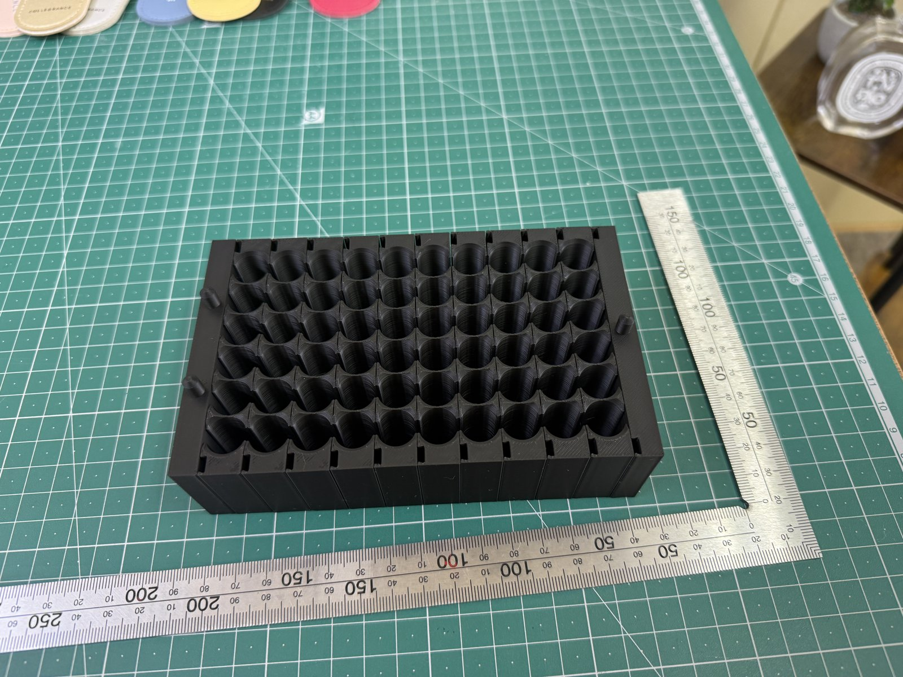
反転は「握りっぱなし」だと分かって、部品が1つ増えた
もう1つ、使って分かったこと。ひっくり返すあいだ、両手でずっと挟み続けていないといけません。60本分を毎回これでやるのは疲れます。そこで「台座トレー」（治具3）を追加。反転前に上から被せると両端の爪が治具1にカチッと掛かり、握る力が要らなくなる。反転後はそのまま充填の台座になります。あわせて、連結したモジュールを長い1本のまま持つとフニャつくと分かったので、1本ずつ被せる手順に変えました。
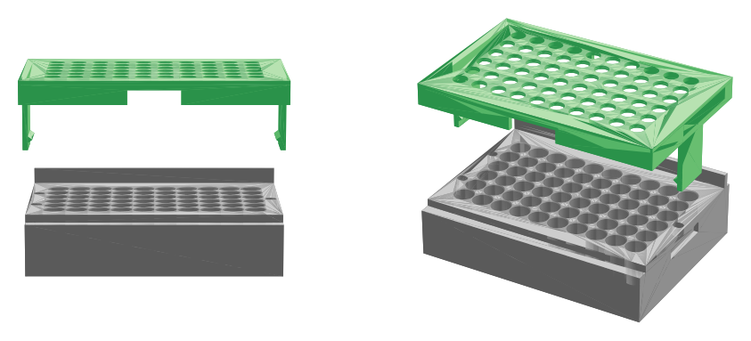
今度は「取り出せない」——壁を外せるトレーにした
一段落かと思ったら、次の問題です。連結を縦に変えたということは、外すときも真上に抜くしかない。ところが充填後のモジュールは四方をトレーの壁に囲まれていて、指を差し込む隙間がありません。
解決策は、壁のほうを外せるようにすること。トレーの長い側の壁を本体から切り離して差し込み式の「側壁バー」2本にし、ほぞを穴に落とすとカチッと座るようにしました。充填と反転のあいだは壁として働き、取り出すときは真上に抜けば壁が消える。モジュールの端には指が掛かる窪みも付けました。
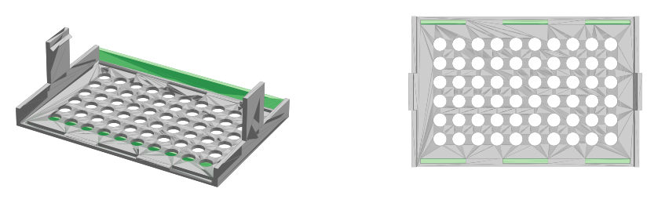
生産技術の経験と、AIの役割分担
私は独立前、製造業で生産技術の仕事をしていました。金型や寸法の公差（許される誤差の幅）を日常的に扱っていた経験は、今回かなり効いたと思います。
ただ効いたのは「設計ができること」ではなく、何を疑うかが分かっていたことです。「壁0.25mmって印刷できるの？」「圧入の力はどこで受けるの？」「この溝、支え材が生えない？」——こういう問いは現場を知らないと出てきません。逆に、問いさえ出せれば形にするのはAIが圧倒的に速い。
| AIに任せたこと | 人が持ったこと |
|---|---|
| 寸法から立体を作るプログラム（Python）を書く | 何に困っているかを言葉にする（従業員の提案） |
| STLファイルと確認用の画像を出す | 「それ印刷できる？」「力はどこで受ける？」と疑う |
| 印刷設定ファイルを書く | 試作を触って、要る・要らないを決める |
| 壁が薄いと分かったときの代替案を出す | フォークを捨てる、蝶ネクタイを却下する、という判断 |
最初の問いを出してくれたのは従業員で、途中の問いを出したのは私、形にしたのはAI。誰か一人の手柄ではなく、この分担ができたことが、今回一番良かった点だと思っています。
中小の現場で「AIで治具」が現実的になったと思う理由
治具を外注すると、図面を起こし、打ち合わせし、納期を待ち、合わなければ作り直し。小さな現場ではその手間と費用に見合わないので「手でやればいい」で終わりがちです。今回は着手から本番一式の印刷まで2日、かかった費用は樹脂代だけでした。
現実的になった理由を3つ挙げるなら、
- 専用の設計ソフトを覚えなくていい。日本語で寸法と条件を伝えれば、形が出てくる
- 作り直しが一瞬。数字を直して実行するだけ。「フォークを捨てる」「脚をやめる」といった方針転換に設計作業が追いつく
- 3Dプリンタが家庭用の価格で、安定して動く。スライサーの設定ファイルまでAIが書ける
ただし、AIがあれば誰でも治具が作れるとは思っていません。必要なのは「ここが面倒」と言える現場と、「それ本当に要る？」と疑える人です。道具が安くなったぶん、この2つの価値が相対的に上がった、というのが正直な実感です。
今回の治具は、使いながらいまも変わり続けています。初版を刷った日から1週間で、連結を作り直し、台座トレーが増え、そのトレーの壁が外れるようになりました。この記事を書いているあいだにも、はめ合いを調整するテスト印刷が回っています。
結局のところ、治具そのものより価値があるのは、「ここ、こうしたい」と言われてから翌日には形が変わっている、という速さのほうだと思っています。最初に声を上げてくれた人が、それを見てまた次の一言を言ってくれる。今のところ、その往復が続いています。
「うちの現場のこの作業、道具にできる？」と思ったら
同じやり方で作れるかどうかは、作業の内容と寸法を聞けばだいたい分かります。写真と「何に困っているか」をLINEで送っていただければ、現実的かどうかの目安をお返しします。予約や電話は不要です。
LINEで相談する